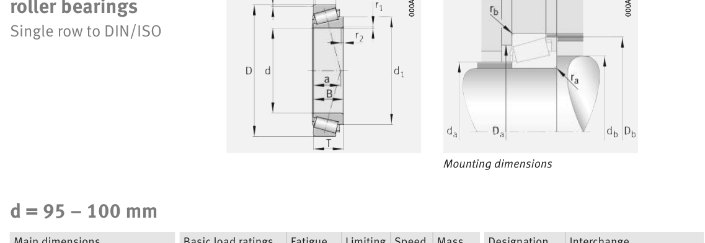

Original catalogue drawing - FAG Schaeffler HR 1, page 602

Scanned from the manufacturer catalogue page listing this part number. All part numbers printed on that table share the same drawing.
Scale cross-section
Blue = inner / outer ring, yellow = rolling element. Drawn to scale from this part's own
dimensions for selection reference only - not a manufacturing or assembly drawing.
Dimension table (mm / inch)
Symbol
Dimension
mm
inch
d
Bore diameter
100
3.937
D
Outside diameter
160
6.2992
B
Inner-ring / bearing width
40
1.5748
T
Overall assembly width
42
1.6535
C
Cup / outer-ring width
34
1.3386
Notes
Weights are given in kg. Load ratings are shown in both the original catalogue units and the converted value (1 N = 0.2248 lbf). Data is provided for selection reference only - confirm against the latest official catalogue before ordering.
Main dimensions
Bore d (mm)
100
Outside dia. D (mm)
160
Width B (mm)
40
Overall width T (mm)
42
Cup width C (mm)
34
Inner-ring OD d1 (mm)
133.8
Load ratings & speeds
Basic dynamic load rating Cr (lbs)
61822
Basic static load rating Cor (lbs)
88800
Basic dynamic load rating Cr (N)
275000
Basic static load rating C0r (N)
395000
Basic dynamic axial rating Ca (N)
6
Fatigue limit load Cur (N)
60000
Factor e
0.53
Factor Y
1.14
Factor Y0
0.63
Limiting speed nG (rpm)
4,550
Reference speed nB (rpm)
2,650
Effective load centre a (mm)
42
Weight
Weight (kg)
3.51
Mounting dimensions (fillets / shoulders)
Chamfer r2 min (mm)
5
Shaft shoulder da (mm)
110
Shaft shoulder db (mm)
117
Housing shoulder Da (mm)
135
Housing shoulder Db (mm)
154
Housing fillet ra max (mm)
5
Fillet rb max (mm)
3
Bearing life (ISO 281 basic rating life)
C / P
Equivalent load P (N)
L10 (106 rev)
L10h at 1,500 rpm
4
68,750
102
1,129
6
45,833
392
4,361
8
34,375
1,024
11,378
10
27,500
2,154
23,938
15
18,333
8,323
92,483
Basic rating life per ISO 281: L10 = (C/P)10/3 with C = 275,000 N. Hours = L10 x 106 / (60n). Life-modification factors for lubrication, contamination and temperature (aISO) are not included.
Source & traceability
Brand
FAG
Source catalogue
FAG / Schaeffler Rolling Bearings HR 1
Catalogue page
p.602 (dimensions)
Load ratings in newtons, fatigue limit load Cur, limiting speed nG and reference speed nB.
Send us the quantity you need and we will come back with price and
lead time, normally within 24 hours. Equivalent parts from other brands can be quoted at the same time.